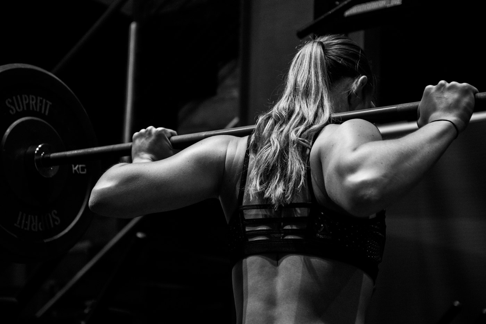
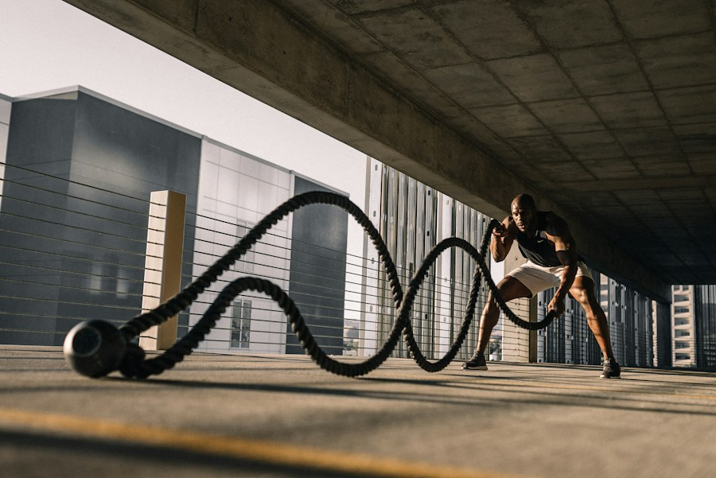
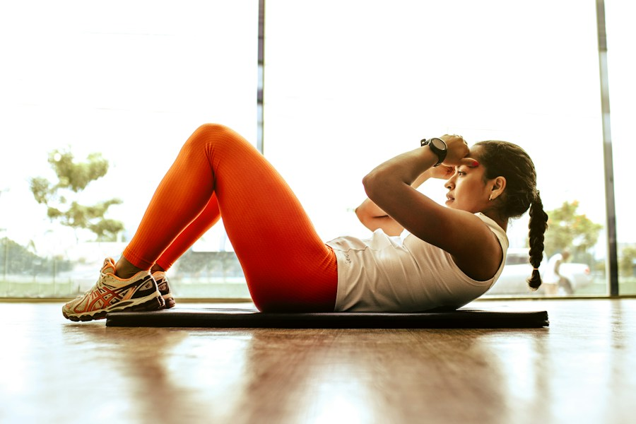
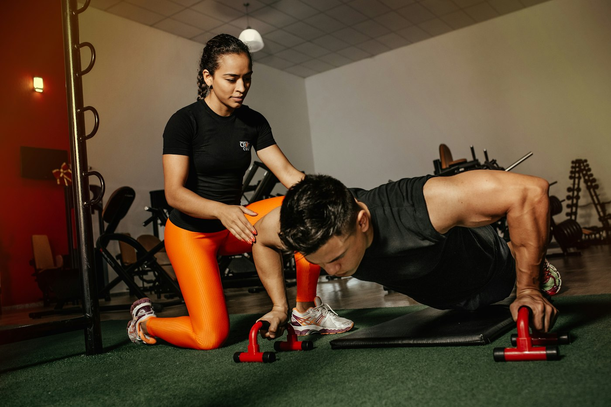

PATH 01 · Strength foundations
Learn the big lifts, properly.
- For
- New or returning lifters who want coached technique on the squat, hinge, press and pull.
- Format
- 1:1 in person
- Structure
- 8 weeks · 2 sessions a week · retest in week 8
Every client starts with a movement assessment and a baseline session. From there, Sami writes training in four-week blocks, adds load only when your technique holds, and reviews the numbers with you before the next block begins.
Five ways to train with REP / RESET. Each one says who it is for, how it is delivered and what to do next.

PATH 01 · Strength foundations
PATH 02 · Remote strength programme
| # | Exercise | Sets × reps | Effort |
|---|---|---|---|
| A1 | Back squat | 4 × 5 | RPE 7 |
| A2 | Romanian deadlift | 3 × 8 | RPE 7 |
| B1 | Split squat | 3 × 10/side | Tempo 3-1-1 |
| B2 | Plank | 3 × 40s | — |
PATH 03 · Small-group barbell club
PATH 04 · Conditioning circuit


PATH 05 · Mobility & reset
How a 12-week stretch of coaching is put together. Select a phase to see where it sits in the block.
A movement screen, a conversation about your training history and goals, and a light baseline session.
OutputA written starting point you can read
Training is written in four-week blocks: a main lift, supporting work and conditioning, matched to the days you can actually train.
OutputBlock 1 programme, explained session by session
Load moves up only when technique and effort ratings hold. When they don't, we adjust the plan rather than push through.
OutputBlock 2, adjusted from Block 1 notes
A lighter deload week every few blocks, plus simple guidance on rest days, sleep routine and session spacing.
OutputA planned lighter week
We retest the baseline, read the training log together and decide what the next block should focus on.
OutputA review note and the next block's focus
Objectives, session structure, equipment, delivery and illustrative pricing for every programme. Compare up to three side by side.
5 programmes shown
P-01
Learn and load the squat, hinge, press and pull with a coach beside the bar.
P-02
A written four-week programme for your own gym, with weekly video feedback.
P-03
Coached barbell sessions with up to three other people, each on their own numbers.
P-04
A 30-minute interval session with stations scaled to each person.
P-05
A slower weekly session for positions, breathing and range of motion.
CompareTick “Compare” on two or three programmes to see them side by side.
Add sessions from the programmes above to see how a week could look. A planning sketch, not a prescription. Saved in this browser.

Strength coach · Rep / Reset (fictional)
Sami coaches strength the way it is written in the log: one lift at a time, with a reason for every set. Sessions are calm and specific, and most of the coaching happens in the conversation before the bar is loaded.
| Credential | Verification status |
|---|---|
| Strength & conditioning certification | Not claimed in this demo |
| First aid / CPR | Not claimed in this demo |
| Years coaching | Not claimed in this demo |
A live site would list each qualification with the issuing body, the date and a way to verify it. This is a fictional demonstration brand, so none are claimed.
Three rules that shape every session.
Weight goes up when the movement looks the same at the end of a set as at the start. Not before.
Every session is logged. The log, not memory or mood, decides what happens next week.
Two sessions you can keep beat four you will skip. The programme is built around your real calendar.
Short, plain-language guidance on technique, programming and recovery. General education, not medical advice.
RPE stands for Rating of Perceived Exertion. In strength training it usually runs from 6 to 10 and describes how many more good reps you could have done at the end of a set.
An RPE 10 means you had nothing left. RPE 9 means one more rep was possible, RPE 8 means two, and RPE 7 means about three. Most of our working sets are written between 6 and 8.
Why use it? Because the same weight feels different on a good night's sleep than after a long week. RPE lets the programme flex with you while keeping the intent of the session.
It takes a few weeks to rate sets accurately. Be honest rather than brave, and write the number down straight after the set, before you forget how it felt.
No. Rep / Reset is a fictional demonstration brand. The planner and booking demo show how the experience would work; no schedule or capacity is live.
They are illustrative demo prices to show how a programme comparison would read. No payment is taken.
No. Coaching is not a substitute for a doctor or physiotherapist. If you are managing an injury or a medical condition, speak to a qualified clinician first.
No. Strength foundations is written for complete beginners and returning lifters. Small-group sessions need a short 1:1 assessment first.
Four short steps. Sami uses this to decide whether coaching is a good fit and which format to suggest. It does not reserve a place.
Health information: please don't include injuries, conditions or medication here. If something affects your training, just say you'd like to discuss it and it will be handled privately on the call.